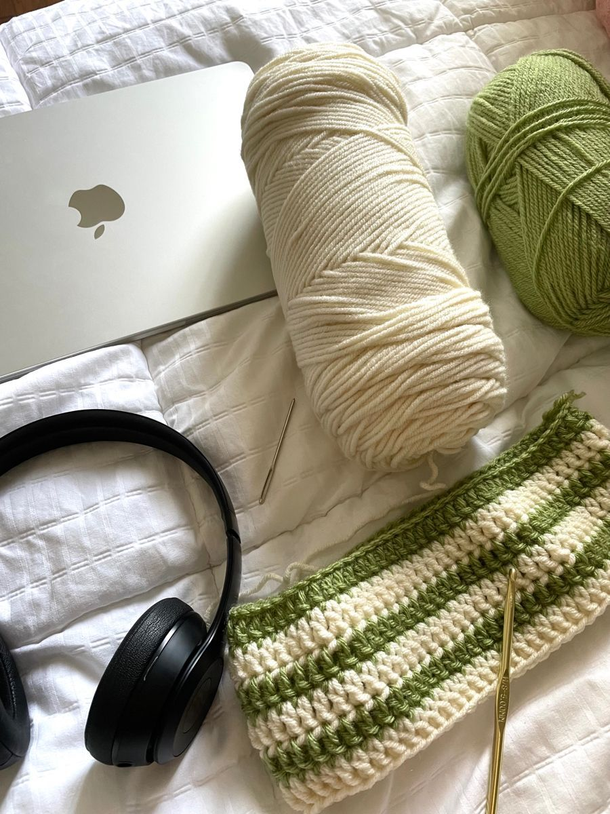

About Crochet

Crochet is a craft that involves creating fabric from yarn or thread using a crochet hook.
This technique produces different patterns and textures.
With crochet, you can make various items such as clothes, accessories, toys, and home decor.
Crocheting is a relaxing and creative hobby, enjoyed by people of all ages around the world.